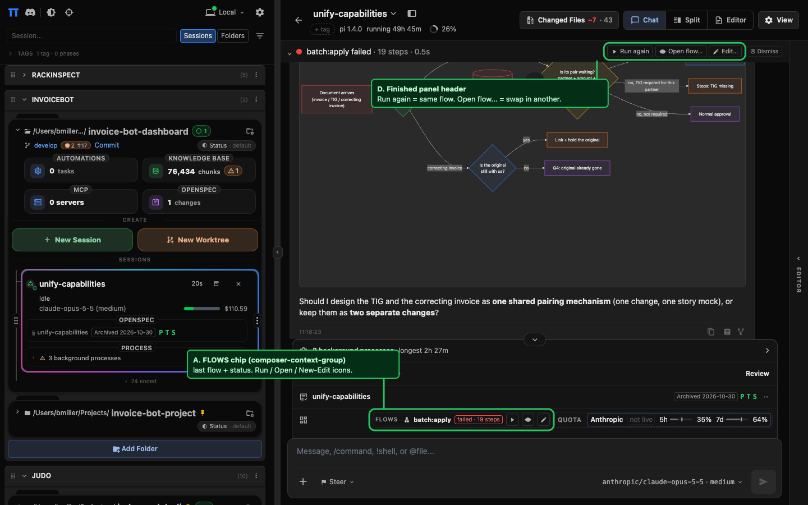
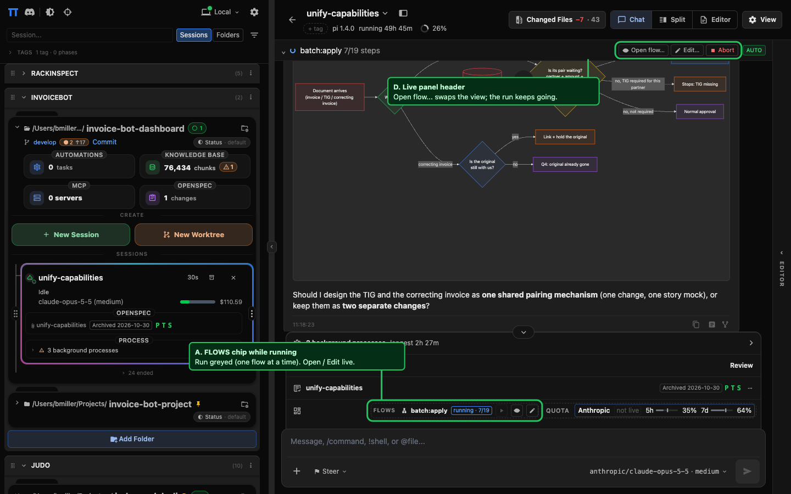
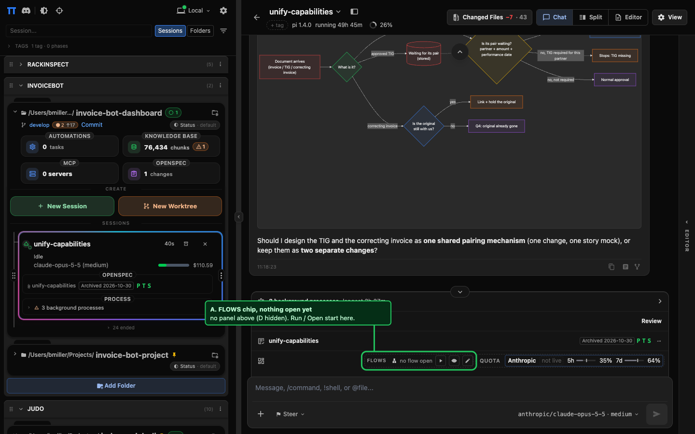
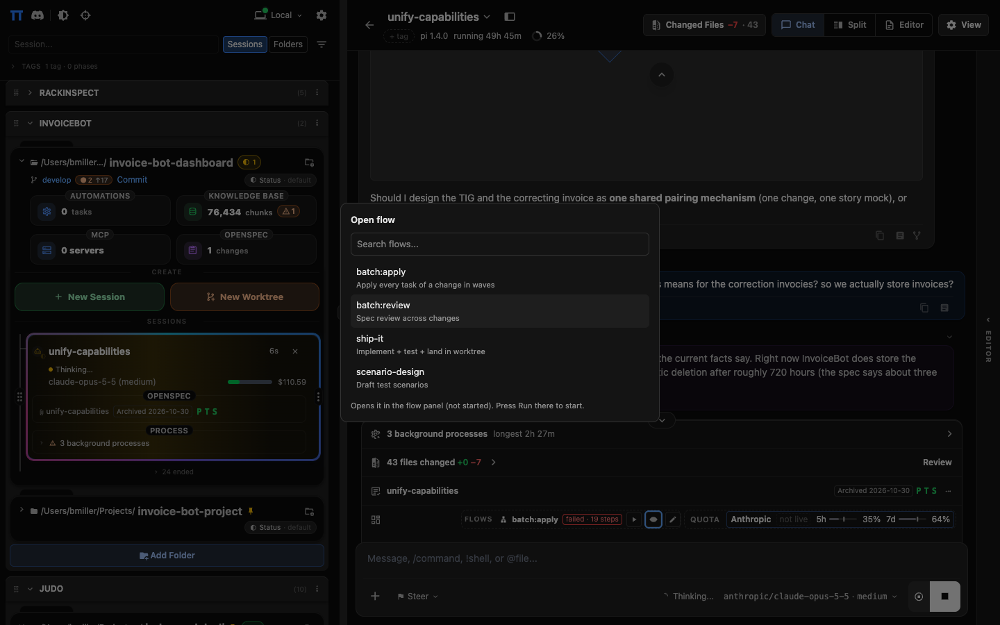

flows-dock-chip-and-panel-actions
Live dashboard with the proposed UI injected. Green box = new surface.
1. Flow finished / failed

2. Flow running (Run and Open disabled in the final design)

3. No flow open, project has flows

4. Open flow picker
